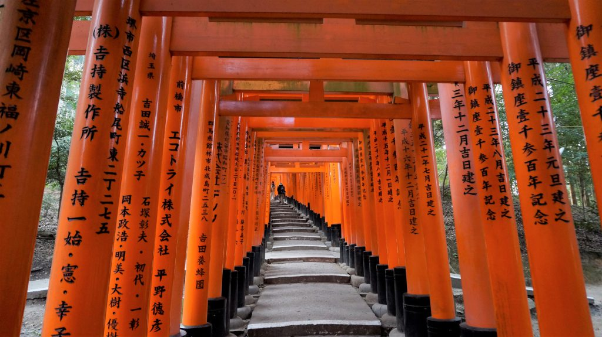
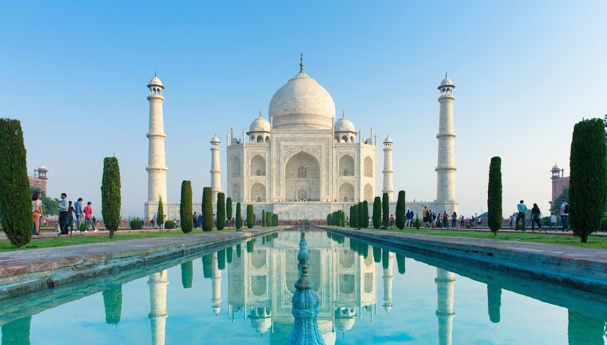
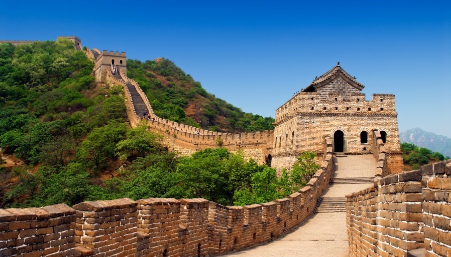
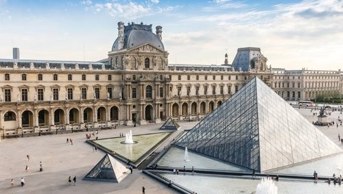
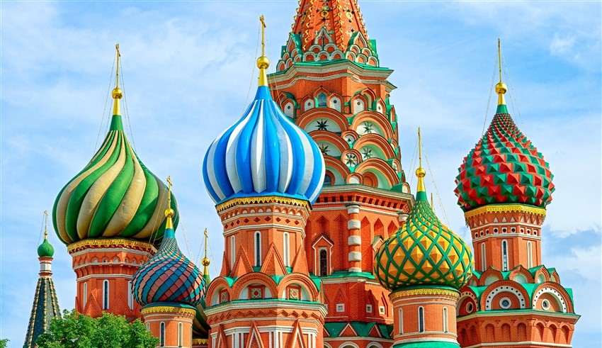
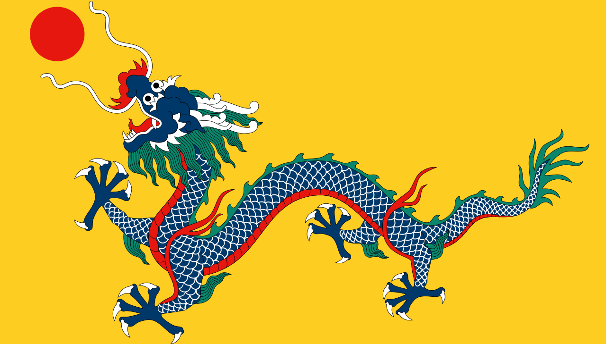

日本
日本是一個融合傳統文化與現代科技魅力的國家。從繁華熱鬧的東京街頭，到充滿歷史氣息的京都古寺，再到壯麗的富士山景色，每個地方都展現出獨特的風貌。日本不僅擁有精緻的美食文化與四季分明的自然景觀，也以細膩的服務精神與深厚的文化底蘊聞名於世。無論是賞櫻、泡溫泉，還是探索動漫與流行文化，日本都能帶給旅人難忘的體驗。

印度
印度擁有悠久歷史與多元文化，但在快速發展的背後，也面臨許多社會問題。部分城市人口過度密集，交通混亂、空氣污染嚴重，街道環境與衛生條件在某些地區較為不足。貧富差距明顯，使得現代化高樓與貧民窟形成強烈對比。此外，基礎建設、公共安全與性別議題也時常成為外界關注的焦點。不過，印度同時也是一個持續成長與改變中的國家，在科技、經濟與文化領域依然具有龐大的影響力。

中國
中國擁有數千年的歷史文化與廣闊的土地，是世界上人口最多的國家之一。從壯麗的萬里長城、古老的故宮，到現代化的上海與深圳，中國展現出傳統與科技並存的獨特風貌。近年來，中國在經濟、科技與基礎建設方面快速發展，高鐵、電子支付與智慧城市技術更受到全球關注。同時，中國也擁有豐富多樣的美食文化與自然景觀，吸引許多旅客前往探索。
美國
美國是全球影響力極強的國家之一，在政治、經濟、科技與文化領域都占有重要地位。從紐約的高樓天際線，到加州的陽光海岸，再到壯麗的國家公園如大峽谷與黃石公園，美國展現出多元且廣闊的地理風貌。作為世界科技與創新重鎮之一，美國擁有許多知名企業與頂尖大學，同時也是電影、音樂與流行文化的重要輸出國。不同族群與文化在此交融，使其社會呈現高度多元化的特色。
義大利
義大利是一個充滿藝術氣息與歷史底蘊的歐洲國家，以悠久的羅馬文明與文藝復興文化聞名於世。從羅馬競技場到威尼斯水城，再到佛羅倫斯的藝術建築，每一座城市都像是一座露天博物館，保存著數千年的文明痕跡。義大利同時以美食文化著稱，披薩、義大利麵與濃縮咖啡深受全球喜愛。境內還擁有壯麗的自然景觀，如阿爾卑斯山與地中海海岸線，使其成為結合歷史、藝術與自然美景的代表性旅遊國家。

法國
印度擁有悠久歷史與多元文化，但在快速發展的背後，也面臨許多社會問題。部分城市人口過度密集，交通混亂、空氣污染嚴重，街道環境與衛生條件在某些地區較為不足。貧富差距明顯，使得現代化高樓與貧民窟形成強烈對比。此外，基礎建設、公共安全與性別議題也時常成為外界關注的焦點。不過，印度同時也是一個持續成長與改變中的國家，在科技、經濟與文化領域依然具有龐大的影響力。

俄羅斯
俄羅斯是世界上國土面積最大的國家，橫跨歐洲與亞洲兩大洲，擁有極為多樣的地理與氣候環境。從寒冷的西伯利亞凍原，到歐洲部分的城市與文化中心，形成強烈對比的國土風貌。俄羅斯擁有深厚的歷史與文化傳統，以文學、音樂與芭蕾藝術聞名全球，托爾斯泰與柴可夫斯基等文化人物影響深遠。首都莫斯科與聖彼得堡則展現出不同風格的城市氣質，一個莊嚴現代，一個充滿歐洲古典建築美感。同時，俄羅斯在能源、軍事與科技領域也具有重要國際地位，使其在全球政治與經濟格局中扮演關鍵角色。

清國
清國是由滿族建立的王朝，在鼎盛時期疆域遼闊，涵蓋東亞廣大地區，並發展出高度成熟的中央集權制度。皇城北京作為政治與文化中心，以紫禁城為核心，展現出嚴謹的宮廷制度與深厚的儒家治理思想。在社會與經濟方面，清朝農業技術穩定發展，手工業與商業活動也十分活躍，江南地區更是絲綢、茶葉與瓷器的重要產地，推動了對外貿易與文化交流。文化上，書法、繪畫、戲曲與典籍編纂達到相當高度，形成獨特的東方古典美學體系。同時，清朝在多民族治理與邊疆管理上建立複雜制度，使不同地區與族群得以納入統一體系之中，形成多元融合的帝國格局。
索馬利亞
索馬利亞位於非洲之角，擁有漫長的印度洋海岸線與重要的地理戰略位置。這個國家歷史悠久，曾是古代貿易航線的重要節點，文化融合了阿拉伯與非洲多元影響。然而，由於長期的內戰與政局不穩，索馬利亞部分地區基礎建設較為薄弱，經濟發展也受到限制。在2000年代初期，索馬利亞沿海曾出現海盜活動問題，對國際航運造成影響，成為全球關注的安全議題之一。近年來，隨著國際合作與當地治理逐步改善，局勢已有一定程度的穩定與重建努力正在進行中。